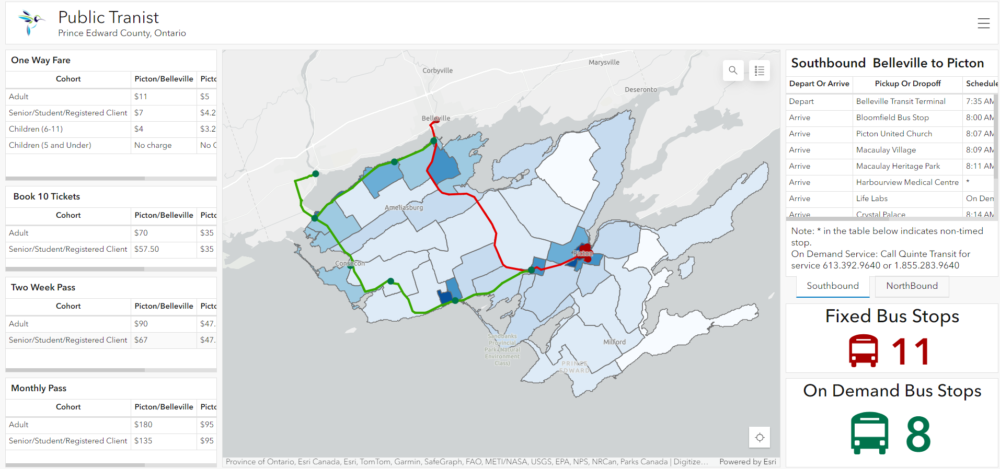
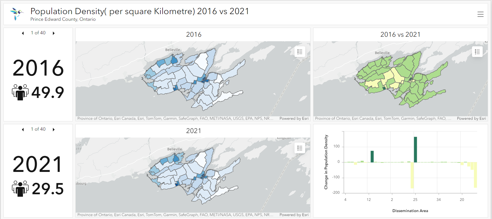

This dashboard is one stop interactive place for information about public transit in Prince Edward County. This dashboard includes a web map which has dizitized bus stops and routes overlain over population density map to provide context about the connectivity. This map includes the fare and schedule table as well as shows the number of fixed and on-demand bus stops within the map extent.
An interactive Dashboard was created which includes three web maps population density 2016, Population density 2021 and the chnage in population density from 2016 to 2021. Indicators are used can be triggered with the map extent and the bar chart is also added which shows the change in density for each dissemination area.
This interactive dashboard includes two web maps which are One Person Per Household Type and Two or more Person Per Household Type. The Indicators triggers the number of People per Household in each Dissemination Areas.